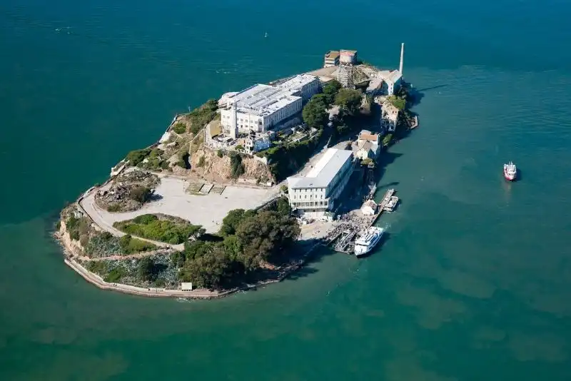

About San Francisco
San Francisco, known for its iconic Golden Gate Bridge and steep, rolling hills, is one of California’s most beloved cities. With a population of over 800,000, this vibrant urban hub is the cultural, financial, and technological epicenter of Northern California. Incorporated in 1850, San Francisco is located on the tip of a peninsula between the Pacific Ocean and San Francisco Bay, making it famous for its cool summers, fog, and stunning views. The city’s unique blend of historic charm and cutting-edge innovation attracts people from all over the world, contributing to a rich, diverse culture. San Francisco’s economy is driven by tech giants in nearby Silicon Valley, finance, and tourism, and its average income level is among the highest in the state. The city boasts world-class restaurants, vibrant arts and music scenes, and landmarks like Alcatraz Island and Fisherman’s Wharf. Despite its compact size, San Francisco offers a dynamic lifestyle, where residents can experience everything from high-end shopping in Union Square to the natural beauty of Golden Gate Park. It’s a city where tradition meets innovation, making it one of the most sought-after places to live and visit in California.
